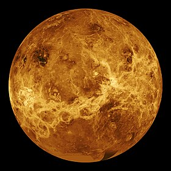

Mercurio
Mercurio es el planeta más pequeño de nuestro sistema solar. Es apenas un poco más grande que la Luna de la Tierra.
Sin embargo, Mercurio no tiene lunas. Es el planeta más cercano al Sol, pero en realidad no es el más caliente. Venus es más caliente.
Junto con Venus, la Tierra y Marte, Mercurio es uno de los planetas rocosos. Tiene una superficie sólida que está cubierta de cráteres.
En lugar de una atmósfera, Mercurio posee una delgada exosfera formada por átomos expulsados de la superficie por el viento solar y los
meteoritos que chocan contra él. La exosfera de Mercurio está compuesta principalmente de oxígeno, sodio, hidrógeno, helio y potasio. Mercurio no tiene lunas.

Venus
Aunque Venus no es el planeta más cercano al Sol, es el más caliente. Tiene una atmósfera densa, llena de dióxido de carbono, que provoca el efecto invernadero, y de nubes compuestas de ácido sulfúrico. Los gases atrapan el calor y mantienen a Venus bien calentito. De hecho, hace tanto calor en Venus que metales como el plomo serían charcos de metal fundido.
Tierra
Nuestra atmósferaestá compuesta, en gran parte, por nitrógeno. También tiene mucho oxígeno, que nos permite respirar.
Además, nos protege de los meteoroides que se acercan a la Tierra, la mayoría de los cuales se desintegran en nuestra
atmósfera antes de llegar a la superficie en forma de meteoritos.
Es posible que, como se trata de nuestro hogar, pienses que lo sabemos todo sobre la Tierra. ¡La verdad es que no!
Aún nos queda mucho por aprender sobre nuestro planeta. Actualmente, hay muchos satélites en órbita alrededor de la
Tierra, tomando fotos y realizando mediciones. Esto nos permite saber más cosas sobre el clima, los océanos, la tierra,
el cambio climático y muchos otros temas importantes.

Marte
Marte es el planeta interior más alejado del Sol. Es un planeta telúrico con una atmósfera delgada de dióxido de carbono, y tiene dos satélites pequeños y de forma irregular, Fobos y Deimos (hijos del dios griego), que podrían ser asteroides capturados similares al asteroide troyano (5261) Eureka.
Jupiter
Júpiter es el planeta más grande de nuestro sistema solar. Es parecido a una estrella, pero nunca tuvo la masa suficiente para comenzar a arder. Está cubierto de bandas de nubes arremolinadas.
Saturno
Saturno es el sexto planeta del sistema solar contando desde el Sol, el segundo en tamaño y masa después de Júpiter y el único con un sistema de anillos visible desde la Tierra.
Urano
Urano es el séptimo planeta del sistema solar, el tercero de mayor tamaño, y el cuarto más masivo. Se llama así en honor de la divinidad griega del cielo Urano, el padre de Crono y el abuelo de Zeus.
Neptuno
Neptuno es el octavo planeta en distancia respecto al Sol y el más lejano del sistema solar. Forma parte de los denominados planetas exteriores, y dentro de estos, es uno de los gigantes helados, y es el primero que fue descubierto gracias a predicciones matemáticas.